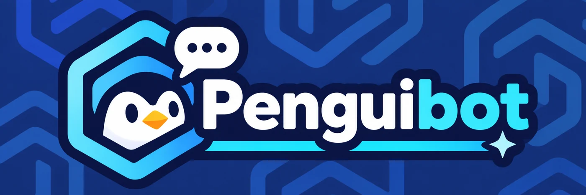

Meet Penguibot
AI-powered chat, customizable moods, conversation memory, and image generation for PenguinMod projects. Version 5.1 — Blue Edition.
Independent custom extension, not an official PenguinMod or OpenAI product. Open-source under the MIT License.
What can Penguibot do?
Chats
Ask AI questions, retrieve answers, select chat models, and adjust answer length.
Memory
Automatic and manual conversation memory, with save/load support for projects.
Mood
Give the chatbot a custom personality and reset it whenever you like.
Images
Generate costumes or backdrops, with preset and custom dimensions.
Status
Check API connection, view errors, and detect requests in progress.
Blue blocks
Organized Setup, Chats, Mood, Memory, Images, and Status sections.
How to install
- Download the
.jsextension above. - Open PenguinMod Studio and create a new project.
- Go to Extensions → Load Custom Extension → File.
- Choose
penguibot_v5_1_blue.js. - Select Run without sandbox if prompted. Only enable this for code you trust.
- Load the extension and find the blue Penguibot blocks.
- Provide your own OpenAI API credentials for private testing; see the security note below.
Custom extension URL loading may restrict unsandboxed execution depending on the source. Local-file loading is the recommended install method.
API keys and costs
Penguibot is a community project. It is not affiliated with, endorsed by, or published in the official PenguinMod Extension Gallery.